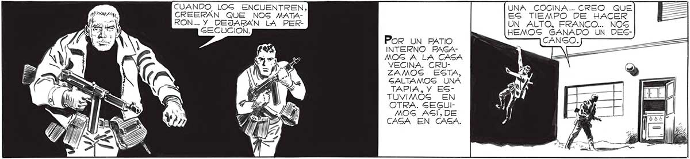

148 PARECE MENTIRA, ESTAR LIBRE, POR FIN, DEL TRA4JE AISLANTE. CUANDO LOG ENCUENTREN, CREERAN QUE NOG MATARON... Y DEJARAN LA PERGECUCION. Y DE LOS "CAGCARUGl CONSEGUIMOS MIRAR DENTRO DEL PABELLON DE LA l ORQUESTA, SEGURO Á QUE ENCONTRARE| MOS ALGO DE INTE771 RÉS. Por UN BATIO CANGO. INTERNO PAGAMOG A LA CASA VECINA. CRUZAMOS ESTA, GALTAMOS UNA TAPIA, Y ESTUVIMOG EN OTRA. SEGUIMOS AGIÍ, DE CASA EN CAGA. Y DE LOGS HOMBRES-ROBOTG... PERO FUERA DE LA EXIGTENCIA DE ESTOS, Y DE LA COMPROBACIÓN DE QUE LA "NIEVE” CAIDA YA NO HACE NADA... -.NO HEMOS AVERIGUADO TODAVIA NADA DE VERDADERA IMPORTANCIA... Gl... COMO PARA RECIBIR ORDENES.O PARA QUE LES ACOMODARAN ALGÚN | CIRCUITO. TAMBIEN YO LO CREO: TODOS LOGS “CASCARUDOS” IBAN Y VENÚAN HACIA EL PABELLON. TENIA MAS HAMBRE DE LO QUE CREÍA. UN POCO DE VINO, FRANCO, NO MUCHO, PORQUE TENEMOS QUE HACER TODAVIA. UNA COCINA... CREO QUE ES TIEMPO DE HACER UN ALTO, FRANCO... NOS HEMOS GANADO UN DESPERO NO EGTAMOG LEJOS Pue UNA BUENA COMIDA. LÁSTIMA QUE DE AFUERA NOG LLEGABA, CONGTANTE, EL CHIRRIDO INACABABLE DE LOS 'GASCARUDOG”. RECIÉN CUANDO TERMINAMOS DE COMER, SENTI CIERTA VERGUENZA: HABIAMOS SALIDO EN MIGION DE EXPLORACION, Y, EN MITAD DE LA EMPREGA, NOG PONIAMOS A CENAR a.
